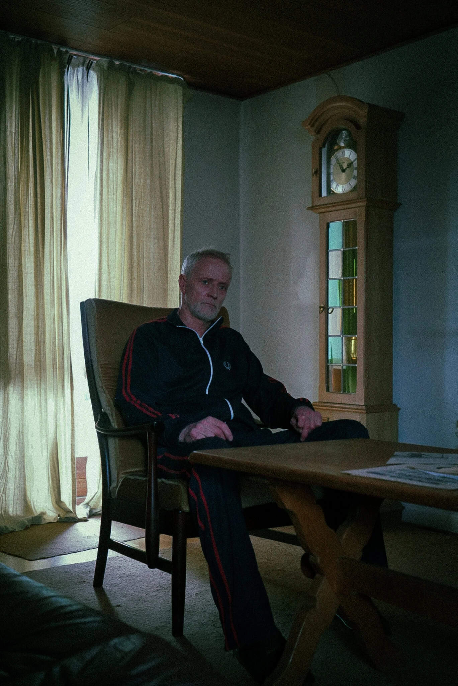
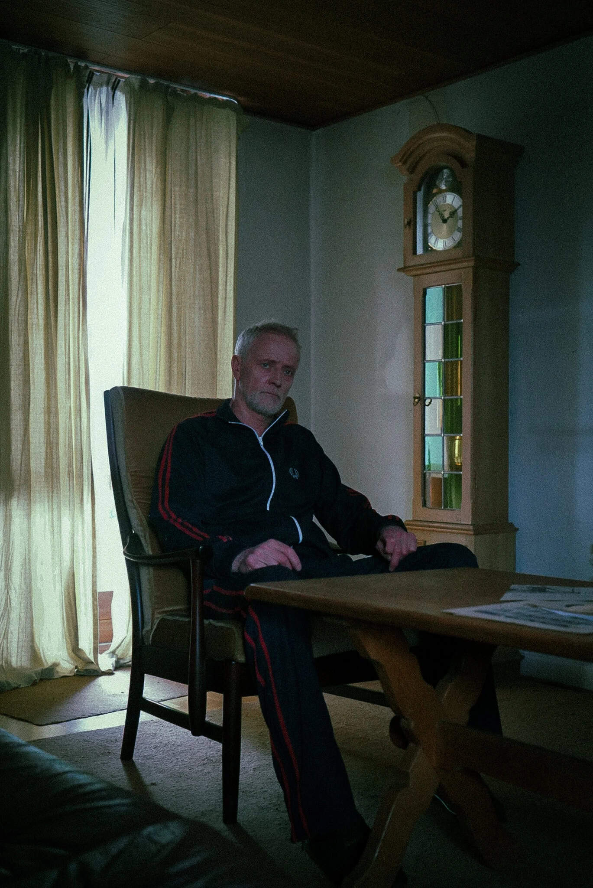

AA ARTISTRY
multimediedesigner med fokus på foto & film
FOTO OG INDHOLD
De sidste tre år, har jeg arbejdet med at dygtiggøre mig inden for fotografering, hvilket har givet mig en perlerække af fantastiske og meget forskellige oplevelser heriblandt andet BTS på film, eventfotografering, portætter og reklamefotos. Oplevelserne har givet mig evnen til at tilpasse mig mine omgivelser og arbejde på mine fødder, men også strukturer fotokampagner og fotoset og konceptuerer en virksomheds mission til visuelle fortællinger. I løbet af mit studie som multimediedesigner, har jeg gennem undervisning og feedback kunne dygtiggøre mig yderligere, og har fået endnu flere redskaber indenfor dette.
HISTORIEFORTÆLLER
Jeg arbejder også med billeder i bevægelse. Fotografering deler min passion med film og video. Mit arbejde har bestået af klipning og fotografering på en mindre skala, men i de seneste år har jeg givet mig i kast med at skrive og formidle historier. Jeg har skrevet manuskripter for andre, men sommeren 2024 blev året, hvor jeg instruerede og havde min manuskript- og instruktørdebut på Odense Internationale Filmfestival. Min udannelse har fokuseret sig indenfor shortform-content, der fortæller dit brands historie gennem film til sociale medier eller reklamer. Jeg kombinerer min baggrund indenfor film, med min viden om content og indhold-strategi, når jeg arbejder med dig og dit brand, så vi sammen kan fortælle den bedste historie.


 

LIGHTS, CAMERA, ACTION
FILM & CONTENT
KREATIVITETEN I FORSÆDET
Mit arbejde kombinerer min kreative baggrund, med en stærk forståelse for branding, indhold-strategi og content creation, og jeg sigter altid efter den gode historie. Hos mig er der altid plads til utæmmet kreativitet og skørre idéer er altid er velkomne. Lad os tænke ud af boksen sammen! Jeg kan love dig, at hvad end du vil fortælle, finder vi en kreativ og krøllet løsning, der viser hvem du og dit brand er.
KONTAKT